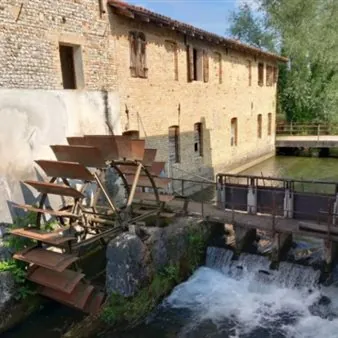

da sab 7 nov a dom 8 nov
4° Festival delle Dimore Storiche - Maglio Zuccato
Il Maglio Zuccato è un sito archeologico industriale la cui storia si dispiega tra i secoli e si intreccia a quella del territorio su cui sorge. È situato a Bannia fra la riva destra del fiume Sile e una strada romana ancora oggi visibile. Le origini del Maglio sono antiche: si…
 Indicazioni
Indicazioni
- Costi e prenotazioni
- Costo non indicato · Prenotazione non indicata
- Programma
- Programma da verificare. Apri la fonte ufficiale per orari e possibili aggiornamenti.
- In caso di maltempo
- Nessuna indicazione specifica pubblicata.
- Note
- Acquisito automaticamente dalla fonte.
L’EVENTO
Descrizione completa
Il Festival delle Dimore Storiche del Friuli Venezia Giulia , organizzato dall’Associazione Dimore Storiche Italiana – Sezione FVG (A.D.S.I. FVG), promuove il patrimonio culturale, storico, artistico e paesaggistico delle dimore storiche private, abitate ancor oggi dai proprietari, che aprono le proprie case, giardini e parchi ai visitatori, facendo loro da guide per raccontare le storie suggestive di cui sono impregnate.
Accesso alle visite
La visita guidata alla dimora è offerta ai visitatori che aderiranno per donazione libera alla raccolta fondi (minimo €10 a persona, gratuita per minorenni accompagnati; titolari della tessera Socio ADSI e Amico delle Dimore Storiche; titolari di Disability Card; giornalisti accreditati da ADSI FVG), che serviranno a sostenere i progetti di valorizzazione turistica del patrimonio culturale privato di ADSI FVG.
Il Maglio Zuccato è un sito archeologico industriale la cui storia si dispiega tra i secoli e si intreccia a quella del territorio su cui sorge. È situato a Bannia fra la riva destra del fiume Sile e una strada romana ancora oggi visibile. Le origini del Maglio sono antiche: si racconta infatti che le fondamenta della struttura più antica, che risale al XV secolo, siano di epoca romana. La costruzione è proseguita poi nel XVII secolo, ritroviamo infatti il Maglio in una mappa del 1683 in cui compare il secondo edificio che ospitava la macina e il laboratorio di falegnameria. Nel XVIII secolo il Maglio è stato acquistato dalla famiglia Zuccato, che ancora lo abita e lo mantiene in vita. Nel corso dei secoli la struttura del Maglio è sempre rimasta fedele al suo aspetto originario; ancora oggi gli antichi archi e travi sono testimonianza della sua storia e di quella delle persone che lo hanno abitato.
Contatti Maglio Zuccato:
Tel: 331 1050944
Dimostrazione della segheria alla veneziana Uno degli eventi del Festival delle Dimore Storiche del FVG in sinergia con la Festa dell’Agricoltura – Coltiviamo la Cultura. Durante gli orari di visita avrà luogo una dimostrazione della segheria alla veneziana alimentata dall’energia idrica, dei macchinari antichi, e degli strumenti di lavorazione artigianale del legno. Si offrono inoltre un laboratorio in cui i visitatori potranno fare esperienza in prima persona degli strumenti antichi e delle attività creative per i bambini che permetteranno di scoprire la tradizione della lavorazione del legno in modo sicuro. Date e orari visite
07/11/2026
ore 10:00 - 11:00 - 12:00 - 14:00 - 15:00
08/11/2026
Informazioni e prenotazioni
IL PROGRAMMA
Programma e orari
Appuntamenti raccolti dalle fonti elencate. Dove manca un orario, non è ancora disponibile in questa scheda.
Programma pubblicato
- ore 10:00 - 11:00 - 12:00 - 14:00 - 15:00
INFORMAZIONI UTILI
Prima di partire
- Controllare la fonte prima di partire.
ORGANIZZAZIONE